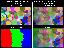

SDL graphics drawing primitives and other support functions wrapped up in an addon library for the Simple Direct Media (SDL) cross-platform API layer.
SDL2_gfx Library
SDL2 graphics drawing primitives and other support functions
Latest Version (Ver 1.0.1 - Sun Jun 15 2014)
SDL2_gfx-1.0.1.tar.gz (.zip) (or on SourceForge)
Older versions
Documentation
Doxygen generated API documentation
(c) A. Schiffler, aschiffler [at] ferzkopp.net 2012-2014, licensed under the zlib license
SDL_gfx Library
SDL graphics drawing primitives and other support functions
The current components of the SDL_gfx library are:
- Graphic Primitives (SDL_gfxPrimitves.h)
- Rotozoomer (SDL_rotozoom.h)
- Framerate control (SDL_framerate.h)
- MMX image filters (SDL_imageFilter.h)
- Custom Blit functions (SDL_gfxBlitFunc.h)
The library is backwards compatible to the above mentioned code. Its is written in plain C and can be used in C++ code.
(c) A. Schiffler, aschiffler [at] ferzkopp.net 1999-2013, licensed under the zlib license
Screenshots
|  | |
| SDL_gfxPrimitives | SDL_rotozoom |
Documentation
Overview and doxygen generated API documentation
Downloads
Latest Version (Ver 2.0.25 - Sun Oct 28 2013)
SDL_gfx-2.0.25.tar.gz (or on SourceForge)
see changelog below
Current Development Version via SVN
https://sourceforge.net/projects/sdlgfx/
Older Releases
Supported Platforms
Language Interfaces
SDL_gfx has been integrated with the following language interfaces:
- Pascal: http://www.freepascal-meets-sdl.net
- Perl: http://sdl.perl.org
- Python: http://www.pygame.org
- C#: http://cs-sdl.sourceforge.net
- Lua: http://www.egsl.retrogamecoding.org
Notes on Graphics Primitives
- AA-line
- AA-circle
- AA-ellipse
- AA-polygon (not filled)
[[[ Interface ]]]
NOTE: This section of the webpage may be out of date.
Please check README in archive and .h files for up-to-date interface information.
Note: all ___Color routines expect the color to be in format 0xRRGGBBAA
Pixel
int pixelColor(SDL_Surface * dst, Sint16 x, Sint16 y,
Uint32 color);
int pixelRGBA(SDL_Surface * dst, Sint16 x, Sint16 y, Uint8 r,
Uint8 g, Uint8 b, Uint8 a);
Horizontal line
int hlineColor(SDL_Surface * dst, Sint16 x1, Sint16 x2,
Sint16 y, Uint32 color);
int hlineRGBA(SDL_Surface * dst, Sint16 x1, Sint16 x2,
Sint16 y, Uint8 r, Uint8 g, Uint8 b, Uint8 a);
Vertical line
int vlineColor(SDL_Surface * dst, Sint16 x, Sint16 y1,
Sint16 y2, Uint32 color);
int vlineRGBA(SDL_Surface * dst, Sint16 x, Sint16 y1,
Sint16 y2, Uint8 r, Uint8 g, Uint8 b, Uint8 a);
Rectangle
int rectangleColor(SDL_Surface * dst, Sint16 x1, Sint16 y1,
Sint16 x2, Sint16 y2, Uint32 color);
int rectangleRGBA(SDL_Surface * dst, Sint16 x1, Sint16 y1,
Sint16 x2, Sint16 y2, Uint8 r, Uint8 g,
Uint8 b, Uint8 a);
Filled rectangle (Box)
int boxColor(SDL_Surface * dst, Sint16 x1, Sint16 y1,
Sint16 x2, Sint16 y2, Uint32 color);
int boxRGBA(SDL_Surface * dst, Sint16 x1, Sint16 y1, Sint16 x2,
Sint16 y2, Uint8 r, Uint8 g, Uint8 b, Uint8 a);
Line
int lineColor(SDL_Surface * dst, Sint16 x1, Sint16 y1,
Sint16 x2, Sint16 y2, Uint32 color);
int lineRGBA(SDL_Surface * dst, Sint16 x1, Sint16 y1,
Sint16 x2, Sint16 y2, Uint8 r, Uint8 g, Uint8 b,
Uint8 a);
AA Line
int aalineColor(SDL_Surface * dst, Sint16 x1, Sint16 y1,
Sint16 x2, Sint16 y2, Uint32 color);
int aalineRGBA(SDL_Surface * dst, Sint16 x1, Sint16 y1,
Sint16 x2, Sint16 y2, Uint8 r, Uint8 g, Uint8 b,
Uint8 a);
Circle
int circleColor(SDL_Surface * dst, Sint16 x, Sint16 y,
Sint16 r, Uint32 color);
int circleRGBA(SDL_Surface * dst, Sint16 x, Sint16 y,
Sint16 rad, Uint8 r, Uint8 g, Uint8 b, Uint8 a);
AA Circle
int aacircleColor(SDL_Surface * dst, Sint16 x, Sint16 y,
Sint16 r, Uint32 color);
int aacircleRGBA(SDL_Surface * dst, Sint16 x, Sint16 y,
Sint16 rad, Uint8 r, Uint8 g, Uint8 b,
Uint8 a);
Filled Circle
int filledCircleColor(SDL_Surface * dst, Sint16 x, Sint16 y,
Sint16 r, Uint32 color);
int filledCircleRGBA(SDL_Surface * dst, Sint16 x, Sint16 y,
Sint16 rad, Uint8 r, Uint8 g, Uint8 b,
Uint8 a);
Ellipse
int ellipseColor(SDL_Surface * dst, Sint16 x, Sint16 y,
Sint16 rx, Sint16 ry, Uint32 color);
int ellipseRGBA(SDL_Surface * dst, Sint16 x, Sint16 y,
Sint16 rx, Sint16 ry, Uint8 r, Uint8 g,
Uint8 b, Uint8 a);
AA Ellipse
int aaellipseColor(SDL_Surface * dst, Sint16 x, Sint16 y,
Sint16 rx, Sint16 ry, Uint32 color);
int aaellipseRGBA(SDL_Surface * dst, Sint16 x, Sint16 y,
Sint16 rx, Sint16 ry, Uint8 r, Uint8 g,
Uint8 b, Uint8 a);
Filled Ellipse
int filledEllipseColor(SDL_Surface * dst, Sint16 x, Sint16 y,
Sint16 rx, Sint16 ry, Uint32 color);
int filledEllipseRGBA(SDL_Surface * dst, Sint16 x, Sint16 y,
Sint16 rx, Sint16 ry, Uint8 r, Uint8 g,
Uint8 b, Uint8 a);
Arc
int arcColor(SDL_Surface * dst, Sint16 x, Sint16 y,
Sint16 r, Sint16 start, Sint16 end, Uint32 color);
int arcRGBA(SDL_Surface * dst, Sint16 x, Sint16 y,
Sint16 rad, Sint16 start, Sint16 end, Uint8 r, Uint8 g, Uint8 b, Uint8 a);
Pie
int pieColor(SDL_Surface * dst, Sint16 x, Sint16 y, Sint16 rad,
Sint16 start, Sint16 end, Uint32 color);
int pieRGBA(SDL_Surface * dst, Sint16 x, Sint16 y, Sint16 rad,
Sint16 start, Sint16 end, Uint8 r, Uint8 g, Uint8 b, Uint8 a);
Filled Pie
int filledPieColor(SDL_Surface * dst, Sint16 x, Sint16 y, Sint16 rad,
Sint16 start, Sint16 end, Uint32 color);
int filledPieRGBA(SDL_Surface * dst, Sint16 x, Sint16 y, Sint16 rad,
Sint16 start, Sint16 end, Uint8 r, Uint8 g, Uint8 b, Uint8 a);
Trigon
int trigonColor(SDL_Surface * dst, Sint16 x1, Sint16 y1, Sint16 x2, Sint16 y2,
Sint16 x3, Sint16 y3, Uint32 color);
int trigonRGBA(SDL_Surface * dst, Sint16 x1, Sint16 y1, Sint16 x2, Sint16 y2,
Sint16 x3, Sint16 y3,
Uint8 r, Uint8 g, Uint8 b, Uint8 a);
AA-Trigon
int aatrigonColor(SDL_Surface * dst, Sint16 x1, Sint16 y1, Sint16 x2, Sint16 y2,
Sint16 x3, Sint16 y3, Uint32 color);
int aatrigonRGBA(SDL_Surface * dst, Sint16 x1, Sint16 y1, Sint16 x2, Sint16 y2,
Sint16 x3, Sint16 y3,
Uint8 r, Uint8 g, Uint8 b, Uint8 a);
Filled Trigon
int filledTrigonColor(SDL_Surface * dst, Sint16 x1, Sint16 y1, Sint16 x2,
Sint16 y2, Sint16 x3, Sint16 y3, int color);
int filledTrigonRGBA(SDL_Surface * dst, Sint16 x1, Sint16 y1, Sint16 x2,
Sint16 y2, Sint16 x3, Sint16 y3,
Uint8 r, Uint8 g, Uint8 b, Uint8 a);
Polygon
int polygonColor(SDL_Surface * dst, Sint16 * vx, Sint16 * vy,
int n, Uint32 color);
int polygonRGBA(SDL_Surface * dst, Sint16 * vx, Sint16 * vy,
int n, Uint8 r, Uint8 g, Uint8 b, Uint8 a);
AA-Polygon
int aapolygonColor(SDL_Surface * dst, Sint16 * vx, Sint16 * vy,
int n, Uint32 color);
int aapolygonRGBA(SDL_Surface * dst, Sint16 * vx, Sint16 * vy,
int n, Uint8 r, Uint8 g, Uint8 b, Uint8 a);
Filled Polygon
int filledPolygonColor(SDL_Surface * dst, Sint16 * vx,
Sint16 * vy, int n, int color);
int filledPolygonRGBA(SDL_Surface * dst, Sint16 * vx,
Sint16 * vy, int n, Uint8 r, Uint8 g,
Uint8 b, Uint8 a);
Textured Polygon
int texturedPolygon(SDL_Surface * dst, Sint16 * vx, Sint16 * vy, int n,
SDL_Surface *texture, int texture_dx, int texture_dy);
Bezier Curve
int bezierColor(SDL_Surface * dst, Sint16 * vx,
Sint16 * vy, int n, int s, Uint32 color);
int bezierRGBA(SDL_Surface * dst, Sint16 * vx, Sint16 * vy,
int n, int s, Uint8 r, Uint8 g, Uint8 b, Uint8 a);
Note: s is the number of steps to render.
Rounded Rectangle
int roundedRectangleColor(SDL_Surface * dst, Sint16 x1, Sint16 y1,
Sint16 x2, Sint16 y2, Sint16 rad, Uint32 color);
int roundedRectangleRGBA(SDL_Surface * dst, Sint16 x1, Sint16 y1,
Sint16 x2, Sint16 y2, Sint16 rad,
Uint8 r, Uint8 g, Uint8 b, Uint8 a);
Rounded Box
int roundedBoxColor(SDL_Surface * dst, Sint16 x1, Sint16 y1,
Sint16 x2, Sint16 y2, Sint16 rad, Uint32 color);
int roundedBoxRGBA(SDL_Surface * dst, Sint16 x1, Sint16 y1,
Sint16 x2, Sint16 y2, Sint16 rad,
Uint8 r, Uint8 g, Uint8 b, Uint8 a);
Thick Line
int thickLineColor(SDL_Surface * dst, Sint16 x1, Sint16 y1, Sint16 x2, Sint16 y2,
Uint8 width, Uint32 color);
int thickLineRGBA(SDL_Surface * dst, Sint16 x1, Sint16 y1, Sint16 x2, Sint16 y2,
Uint8 width, Uint8 r, Uint8 g, Uint8 b, Uint8 a);
Characters/Strings
int characterColor(SDL_Surface * dst, Sint16 x, Sint16 y,
char c, Uint32 color);
int characterRGBA(SDL_Surface * dst, Sint16 x, Sint16 y,
char c, Uint8 r, Uint8 g, Uint8 b, Uint8 a);
int stringColor(SDL_Surface * dst, Sint16 x, Sint16 y, char *c,
Uint32 color);
int stringRGBA(SDL_Surface * dst, Sint16 x, Sint16 y, char *c,
Uint8 r, Uint8 g, Uint8 b, Uint8 a);
void gfxPrimitivesSetFont(unsigned char *fontdata, int cw, int ch);
Note: Several font definitions are included.
Notes on Rotozoomer
Note also that the smoothing toggle is dependent on the input surface bit depth. 8bit surfaces will never be smoothed - only 32bit surfaces will.
Note that surfaces of other bit depth then 8 and 32 will be converted on the fly to a 32bit surface using a blit into a temporary surface. This impacts performance somewhat.
[[[ Interface ]]]
SDL_Surface * rotozoomSurface (SDL_Surface *src, double angle, double zoom, int smooth);
Rotates and zoomes a 32bit or 8bit 'src' surface to newly created 'dst' surface.
'angle' is the rotation in degrees. 'zoom' a scaling factor. If 'smooth' is 1
then the destination 32bit surface is anti-aliased. If the surface is not 8bit
or 32bit RGBA/ABGR it will be converted into a 32bit RGBA format on the fly.
SDL_Surface * rotozoomSurfaceXY (SDL_Surface *src, double angle, double zoomx,
double zoomy, int smooth);
Rotates and zoomes a 32bit or 8bit 'src' surface to newly created 'dst' surface.
'angle' is the rotation in degrees. 'zoomx' and 'zoomy' are scaling factors that
can also be negative. In this case the corresponding axis is flipped. If 'smooth'
is 1 then the destination 32bit surface is anti-aliased. If the surface is not 8bit
or 32bit RGBA/ABGR it will be converted into a 32bit RGBA format on the fly.
Note: Flipping currently only works with antialiasing turned off.
SDL_Surface * zoomSurface (SDL_Surface *src, double zoomx, double zoomy, int smooth);
Zoomes a 32bit or 8bit 'src' surface to newly created 'dst' surface.
'zoomx' and 'zoomy' are scaling factors for width and height. If 'smooth' is 1
then the destination 32bit surface is anti-aliased. If the surface is not 8bit
or 32bit RGBA/ABGR it will be converted into a 32bit RGBA format on the fly.
Smoothing (interpolation) flags work only on 32bit surfaces:
#define SMOOTHING_OFF 0
#define SMOOTHING_ON 1
'factorx' and 'factory' are the shrinking ratios (i.e. 2=1/2 the size,
3=1/3 the size, etc.) The destination surface is antialiased by averaging
the source box RGBA or Y information. If the surface is not 8bit
or 32bit RGBA/ABGR it will be converted into a 32bit RGBA format on the fly.
Notes on framerate functions
The framerate functions are used to insert delays into the graphics loop to maintain a constant framerate.
The implementation is more sophisticated that the usual
SDL_Delay(1000/FPS);
call since these functions keep track of the desired game time per frame for a linearly interpolated sequence of future timing points of each frame. This is done to avoid rounding errors from the inherent instability in the delay generation and application - i.e. the 100th frame of a game running at 50Hz will be accurately 2.00sec after the 1st frame (if the machine can keep up with the drawing). See also the diagram for more details on this.
 |
| Framerate Calc. Diagram |
[[[ Interface ]]]
The functions return 0 or value for sucess and -1 for error. All functions
use a pointer to a framerate-manager variable to operate.
void SDL_initFramerate(FPSmanager * manager);
Initialize the framerate manager, set default framerate of 30Hz and
reset delay interpolation.
int SDL_setFramerate(FPSmanager * manager, int rate);
Set a new framerate for the manager and reset delay interpolation.
int SDL_getFramerate(FPSmanager * manager);
Get the currently set framerate of the manager.
void SDL_framerateDelay(FPSmanager * manager);
Generate a delay to accomodate currently set framerate. Call once in the
graphics/rendering loop. If the computer cannot keep up with the rate (i.e.
drawing too slow), the delay is zero and the delay interpolation is reset.
Notes on imageFilter functions
The compiler flag -DUSE_MMX toggles the conditional compile of MMX assembly.
An assembler must be installed (i.e. "nasm").
[[[ Interface ]]]
Comments:
1.) MMX functions work best if all data blocks are aligned on a 32 bytes boundary.
2.) Data that is not within an 8 byte boundary is processed using the C routine.
3.) Convolution routines do not have C routines at this time.
4.) All routines return 0 for OK and -1 for error.
Detect MMX capability in CPU
int SDL_imageFilterMMXdetect(void);
Force use of MMX off (or turn possible use back on)
void SDL_imageFilterMMXoff(void);
void SDL_imageFilterMMXon(void);
SDL_imageFilterAdd: D = saturation255(S1 + S2)
int SDL_imageFilterAdd (unsigned char *Src1, unsigned char *Src2,
unsigned char *Dest, int length);
SDL_imageFilterMean: D = S1/2 + S2/2
int SDL_imageFilterMean(unsigned char *Src1, unsigned char *Src2,
unsigned char *Dest, int length);
SDL_imageFilterSub: D = saturation0(S1 - S2)
int SDL_imageFilterSub(unsigned char *Src1, unsigned char *Src2,
unsigned char *Dest, int length);
SDL_imageFilterAbsDiff: D = | S1 - S2 |
int SDL_imageFilterAbsDiff(unsigned char *Src1, unsigned char *Src2,
unsigned char *Dest, int length);
SDL_imageFilterMult: D = saturation(S1 * S2)
int SDL_imageFilterMult(unsigned char *Src1, unsigned char *Src2,
unsigned char *Dest, int length);
SDL_imageFilterMultNor: D = S1 * S2 (non-MMX)
int SDL_imageFilterMultNor(unsigned char *Src1, unsigned char *Src2,
unsigned char *Dest, int length);
SDL_imageFilterMultDivby2: D = saturation255(S1/2 * S2)
int SDL_imageFilterMultDivby2(unsigned char *Src1, unsigned char *Src2,
unsigned char *Dest, int length);
SDL_imageFilterMultDivby4: D = saturation255(S1/2 * S2/2)
int SDL_imageFilterMultDivby4(unsigned char *Src1, unsigned char *Src2,
unsigned char *Dest, int length);
SDL_imageFilterBitAnd: D = S1 & S2
int SDL_imageFilterBitAnd(unsigned char *Src1, unsigned char *Src2,
unsigned char *Dest, int length);
SDL_imageFilterBitOr: D = S1 | S2
int SDL_imageFilterBitOr(unsigned char *Src1, unsigned char *Src2,
unsigned char *Dest, int length);
SDL_imageFilterDiv: D = S1 / S2 (non-MMX)
int SDL_imageFilterDiv(unsigned char *Src1, unsigned char *Src2,
unsigned char *Dest, int length);
SDL_imageFilterBitNegation: D = !S
int SDL_imageFilterBitNegation(unsigned char *Src1, unsigned char *Dest,
int length);
SDL_imageFilterAddByte: D = saturation255(S + C)
int SDL_imageFilterAddByte(unsigned char *Src1, unsigned char *Dest,
int length, unsigned char C);
SDL_imageFilterAddByteToHalf: D = saturation255(S/2 + C)
int SDL_imageFilterAddByteToHalf(unsigned char *Src1, unsigned char *Dest,
int length, unsigned char C);
SDL_imageFilterSubByte: D = saturation0(S - C)
int SDL_imageFilterSubByte(unsigned char *Src1, unsigned char *Dest,
int length, unsigned char C);
SDL_imageFilterShiftRight: D = saturation0(S >> N)
int SDL_imageFilterShiftRight(unsigned char *Src1, unsigned char *Dest,
int length, unsigned char N);
SDL_imageFilterMultByByte: D = saturation255(S * C)
int SDL_imageFilterMultByByte(unsigned char *Src1, unsigned char *Dest,
int length, unsigned char C);
SDL_imageFilterShiftRightAndMultByByte: D = saturation255((S >> N) * C)
int SDL_imageFilterShiftRightAndMultByByte(unsigned char *Src1,
unsigned char *Dest, int length, unsigned char N, unsigned char C);
SDL_imageFilterShiftLeftByte: D = (S << N)
int SDL_imageFilterShiftLeftByte(unsigned char *Src1, unsigned char *Dest,
int length, unsigned char N);
SDL_imageFilterShiftLeft: D = saturation255(S << N)
int SDL_imageFilterShiftLeft(unsigned char *Src1, unsigned char *Dest,
int length, unsigned char N);
SDL_imageFilterBinarizeUsingThreshold: D = S >= T ? 255:0
int SDL_imageFilterBinarizeUsingThreshold(unsigned char *Src1,
unsigned char *Dest, int length, unsigned char T);
SDL_imageFilterClipToRange: D = (S >= Tmin) & (S <= Tmax) 255:0
int SDL_imageFilterClipToRange(unsigned char *Src1, unsigned char *Dest,
int length, unsigned char Tmin, unsigned char Tmax);
SDL_imageFilterNormalizeLinear: D = saturation255((Nmax - Nmin)/
(Cmax - Cmin)*(S - Cmin) + Nmin)
int SDL_imageFilterNormalizeLinear(unsigned char *Src1, unsigned char *Dest,
int length, int Cmin, int Cmax, int Nmin, int Nmax);
!!! NO C-ROUTINE FOR THESE FUNCTIONS YET !!!
SDL_imageFilterConvolveKernel3x3Divide: Dij = saturation0and255( ... )
int SDL_imageFilterConvolveKernel3x3Divide(unsigned char *Src,
unsigned char *Dest, int rows, int columns,
signed short *Kernel, unsigned char Divisor);
SDL_imageFilterConvolveKernel5x5Divide: Dij = saturation0and255( ... )
int SDL_imageFilterConvolveKernel5x5Divide(unsigned char *Src,
unsigned char *Dest, int rows, int columns,
signed short *Kernel, unsigned char Divisor);
SDL_imageFilterConvolveKernel7x7Divide: Dij = saturation0and255( ... )
int SDL_imageFilterConvolveKernel7x7Divide(unsigned char *Src,
unsigned char *Dest, int rows, int columns,
signed short *Kernel, unsigned char Divisor);
SDL_imageFilterConvolveKernel9x9Divide: Dij = saturation0and255( ... )
int SDL_imageFilterConvolveKernel9x9Divide(unsigned char *Src,
unsigned char *Dest, int rows, int columns,
signed short *Kernel, unsigned char Divisor);
SDL_imageFilterConvolveKernel3x3ShiftRight: Dij = saturation0and255( ... )
int SDL_imageFilterConvolveKernel3x3ShiftRight(unsigned char *Src,
unsigned char *Dest, int rows, int columns,
signed short *Kernel, unsigned char NRightShift);
SDL_imageFilterConvolveKernel5x5ShiftRight: Dij = saturation0and255( ... )
int SDL_imageFilterConvolveKernel5x5ShiftRight(unsigned char *Src,
unsigned char *Dest, int rows, int columns,
signed short *Kernel, unsigned char NRightShift);
SDL_imageFilterConvolveKernel7x7ShiftRight: Dij = saturation0and255( ... )
int SDL_imageFilterConvolveKernel7x7ShiftRight(unsigned char *Src,
unsigned char *Dest, int rows, int columns,
signed short *Kernel, unsigned char NRightShift);
SDL_imageFilterConvolveKernel9x9ShiftRight: Dij = saturation0and255( ... )
int SDL_imageFilterConvolveKernel9x9ShiftRight(unsigned char *Src,
unsigned char *Dest, int rows, int columns,
signed short *Kernel, unsigned char NRightShift);
SDL_imageFilterSobelX: Dij = saturation255( ... )
int SDL_imageFilterSobelX(unsigned char *Src, unsigned char *Dest,
int rows, int columns);
SDL_imageFilterSobelXShiftRight: Dij = saturation255( ... )
int SDL_imageFilterSobelXShiftRight(unsigned char *Src,
unsigned char *Dest, int rows, int columns,
unsigned char NRightShift);
Align/restore stack to 32 byte boundary -- Functionality untested! --
void SDL_imageFilterAlignStack(void);
void SDL_imageFilterRestoreStack(void);
Installation and Test
To compile the library your need the SDL 1.2 installed from source or installed with the 'devel' RPM package. For example on Mandriva, run:
urpmi libSDL1.2-devel
Then run
./autogen.sh (optional)
./configure
make
make install
ldconfig
to compile and install the library. The default location for the installation is /usr/local/lib and /usr/local/include. The libary path might need to be added to the file
/etc/ld.so.conf
Run the shell script 'nodebug.sh' before make, to patch the makefile for optimized compilation:
./autogen.sh (optional)
./configure
./nodebug.sh
make
make install
ldconfig
Check the folder "Other Builds" for alternative makefiles.
No-MMX
To build without MMX code enabled (i.e. PPC or for AMD64 architecture
which is missing pusha/popa):
./configure --disable-mmx
make
make install
i.e. to build on MacOSX 10.3+ use:
./configure --disable-mmx && make
See folder Other Builds.
To create a Windows DLL using VisualC6:
unzip -a VisualC6.zip
vcvars32.bat
copy VisualC/makefile
nmake
or
unzip -a VisualC7.zip
and open the project file.
Windows (VC7/8/9)
See folder Visual C.
Open project file and review README.
Windows (CE)
See folder Other Builds.
May need workaround for missing lrint.
Cross-Compilation
To build using mingw32 on Win32, check the makefile contained in mingw.zip
To create a Windows DLL using the xmingw32 cross-compiler:
cross-configure
cross-make
cross-make install
Make sure the -DBUILD_DLL is used (and only then) when creating the DLLs.
Make sure -DWIN32 is used when compiling the sources (creating or using
the DLLs.
Specify the path to your cross-compiled 'sdl-config', and invoke
'./configure' with the '--host' and '--build' arguments. For example,
to cross-compile a .DLL from GNU/Linux:
SDL_CONFIG=/usr/local/cross-tools/i386-mingw32msvc/bin/sdl-config \
./configure --host=i586-mingw32msvc --build=i686-pc-linux-gnu
make
make install
QNX
To build on QNX6, patch first using:
patch -p0 <QNX.diff
OSX
To build on MacOS X with Project Builder, follow these steps:
- Update your developer tools to the lastest version (December 2002 as of this revision).
- Install the SDL Developers framework for Mac OS X.
- Download the latest SDL_gfx source distribution and extract the archive in a convenient location.
- Extract the included OSX-PB.tgz archive into the top directory of the SDL_gfx distribution (from step 3). This will create a PB that contains the project files.
- The project has targets for the SDL_gfx framework and the four test programs. All can be built using the 'deployment' or 'development' build styles.
A newer version for MaxOS X is included in the OSX-PB-XCode.zip archive. The updated version uses relative pathnames where appropriate, and pointers to the standard installation location of SDL. However, it may require XCode in order to be used.
Test Programs
Change to the ./Test directory and run
./configure
make
to create several test programs for the libraries functions. This requires
the library to be compiled and installed.
See the source code .c files for some sample code and implementation hints.
Build Prep
Run autogen.sh or manually
aclocal --force
libtoolize --force --copy
autoreconf -fvi
Change Log
Ver 2.0.25 - Sun, Oct 27, 2013 3:08:15 PM
* Added patch for 32- and 64-bit GCC-compiled MMX support
(contributed by Sylvain Beucler, backported from SDL2_gfx)
* Fixed bug in _aaline when x1>x2 and dy==0 (found by Yannick
Guesnet - thanks!)
* Updated documentation.
* Fixed header in SDL_gfxBlitFunc.h (reported by Jaders77 on
sourceforge - thanks!)
Ver 2.0.24 - Sun, Jul 22, 2012 9:27:29 AM
* Removed some missed LGPL references
* Fixed thick line swap bug (patch contributed by Thien-Thi)
and added accuracy test for thick line
* Improved interface to SDL_framerateDelay (idea contributed by
Neil)
* Fixed dramerate modules dependency on SDL_GetTicks returning a
value >0 (issue report contributed by Douglas)
* Fixed 32bpp blending function for BGRA (thanks for the test code
and contributing a fix sabbetts/Jay)
* Updated VS2010 solution file to use SDL-1.2 sources
* Fix for pixel blend routine (patch contributes by Mitjia)
Ver 2.0.23 - Sat Dec 3 22:55:04 PST 2011
* Updated sources to resolve some splint (static code analysis)
issues
* Updates for OpenSDK (WinCE6/ARM) build target (patch contributed
itsnotabigtruck)
* Added OSX Xcode3+ template files to Other Builds collection
(contributed by Vasyl)
* Added various fixes and improvements contributed by folks on
sourceforge (thanks contributors).
* Switched library and test code to zlib license.
Ver 2.0.22 - Sat Sep 11 23:26:42 EDT 2010
* Fixed line width calculation for normal and textured polygons
(patch contributed by Daniel (SupSuper)
* Fixed version setup in configure.in
* Added rounded rectangle and rounded box primitives
* Updated test program for roundedbox + left/right-click support
* Fixed pie calculation (line-case detection, end-angle clipping)
* Updated DLL_EXPORT handling and added WIN64 test
(patch contributed by tigerfishdaisy)
* Added thick line primitive based on Murphy's algorithm
Ver 2.0.21 - Thu May 27 21:14:37 PDT 2010
* Add VC9 project files, source code formatting, fix compiler
warnings, move VC8 project files, remove leftover autoconf/m4 files
* Move static transfer lookup array from .h to .c
(patch contributed by Zbigniew Holdys)
* Add support for VC++ compiler/MASM assembly with active USE_MMX
(contributed by Markus Hossner)
* Added Haiku build support in configure.in
(contributed by Scott McCreary)
* Added helper function that multiplies the alpha channel in
a 32bit surface (contributed by Zbigniew Holdys)
* Disable MMX for 64bit platforms due to lack of support for
pusha/popa (contributed by Olivier Boudeville)
* Update all library functions for doxygen markup. Add doxygen
configuration file.
* Added font rotation support and updated TestFonts sample
* Fixed rotate90 for 0 degree case
(contributed by Chris Allport)
* Updated TestRotozoom with rotate90 case and message display
* Added support for SDL 1.3
* Added doxygen generated documentation.
Ver 2.0.20 - Wed Sep 23 18:42:02 PDT 2009
* Fix for 1-pixel postponement with 8bit scaling
* Updates to headers and configure to allow for cross-compiling
to DLL (not just static .a) and fixes for compiling on Windows
using autotools
* Added Visual CE Project to Other Builds
* Added Symbian and Windows 64bit fix for lrint function.
Ver 2.0.19 - Mon Apr 20 22:56:59 PDT 2009
* gcc43 compiler patch for asm code in image filters
as per http://bugs.gentoo.org/219621 (Peter Alfredsen)
* off-by-one hline patch for 1byte indexed surfaces (Manuel Lausch)
* update acinclude.m4 from SDL-1.2 and moved # serial in file
* applied patch to add pkg-config support for SDL_gfx (Luca Bigliardi)
* changed configure.in INTERFACE_AGE and BINARY_AGE based on Debian
build feedback (Barry deFreese)
* fixed zoom XY-flip code and made it available for all modes in
zoom and rotations
* fixed edge issue on interpolated rotozoom modes
* updated TestRotozoom custom test mode, added delay parameter, added
tests which include flipping, included negative rotation
* update libtool files
* updated Makefile.mingw (Jan Leike)
Ver 2.0.18 - Sun Dec 21 08:38:20 PST 2008
* libtool update for dependencies
* MSVC C89 variable hoisting to enable MSVC compile (sweetlilmre)
* addition of VC9 (Visual Studio 2008) project file (sweetlilmre)
* update to MinGW make file (Sergio Padrino, sweetlilmre)
* fix uninitialised variables in _putPixelAlpha() (Paul Pedriana)
* reverted to original alpha routine in _putPixelAlpha() as new one was causing issues in 16bbp
new routine #define has been renamed to EXPERIMENTAL_ALPHA_PIXEL_ROUTINE
original is now DEFAULT_ALPHA_PIXEL_ROUTINE
* added colorkey handling patch to rotozoom (Sergio Padrino)
* downgraded optimization to -O for asm compatibility with gcc4
Ver 2.0.17 - Sun Jun 1 15:39:38 EDT 2008
* hline/vline clipping and swap-logic fixed
* clipping box dimension check added and clipping-checks optimized
* TestFonts program updated
* Updated documentation on cross-compilation, AMD64
* Fixed circleColor overdraw
* Added arcColor routine
* Added polygonColorMT and polygonTextureMT routines
* Updated 32bit alpha blending routine
Ver 2.0.16 - Mon Feb 5 19:03:31 AST 2007
* updated config.sub to newer version
* added custom RGBA blitter function that sets/maintains target alpha
* added setAlpha function that sets alpha values in 32bit surfaces
* added TextGfxBlit testprogram for new functions
* Fixed C++ type in .h files (thanks Olivier)
* Update some text in README and .spec file
* Removed broken Uint filter routines from test program
* "Cosmetic" changes to test programs and Automake.am
Ver 2.0.15 - Fri Dec 22 08:44:31 AST 2006
* bugfixes in 32bit _putPixelAlpha/filledRectAlpha (thanks CISC)
* various bugfixes in return value generation and return (thanks CISC)
* lock font-surface before using it (thanks CISC)
* fix some breakage in non-MMX filter routines (thanks CISC)
* fix typo in TestABGR (thanks CISC)
* fix double buffer flipping in Tets programs (thanks CISC)
* fixed microversion in .h
* fixed texturePolygon inverted bug
* fixed wrong surface use in test 21 of TestRotozoom
Ver 2.0.14 - Tue Dec 19 08:49:02 AST 2006
* added texturedPolygon routine to library (thanks Jees)
* changed iterator condition in aaellipse to add some overdraw to smooth circle
* added ShrinkImage routine to rotozoom code
* added TestABGR Test program (bug in SDL_gfx or SDL??)
* improved TestImageFilter program (bug in Uint filters)
* changed .so versioning from .so.13.0.0 to .so.0.0.14
(best is to remove all old libs before installing)
* added updated MacOSX ProjectBuilder file (thanks Brian)
* added info on MacOSX 10.3 build
* added mingw (on cygwin) makefile (thanks Brian)
* added Dev-Cpp makefile (thanks Sebastian)
* removed some unused variables from gfx and rotozoom code (thanks Thi)
* fixed a non-critical typecast mistake (thanks Thi)
* converted all C++ comments to C comments in SDL_imageFilter
Ver 2.0.13 - Tue Dec 21 08:41:25 EST 2004
* changed include back to "SDL.h"
* compile fixes for OSX fink (thanks (Michael)
* compile fixes for gcc3.4 (thanks Dries)
* support vertical and horizontal flipping of axis in new
rotozoomSurfaceXY function (thanks Victor)
* updated TestRotozoom program
Ver 2.0.12 - Mon Aug 30 09:04:11 EDT 2004
* piecolor naming fix
* primitive API change to 'filledPie'
* introduction of some const variables
Ver 2.0.11 - Thu May 13 09:42:34 EDT 2004
* added pieRGBA/pieColor primitive (non filled pie)
* added QNX6 build patch
* use $(includedir)/SDL to automake setup
* updated README
* added 2x2 box & pie tests
* added dynamic font setup routine
* added sample font files to the Fonts directory
* added font test program
* string routines changed to use const char
* fixed TestRotozoom clear color bug
Ver 2.0.10 - Thu Dec 11 09:40:08 EST 2003
* updated "missing" script to newer version to avoid build errors
* fixed filled polygon int32 overflow error in calculation
* updated RPM spec file for new website path
* added micro version number to .h file
Ver 2.0.9 - Mon Oct 27 10:03:18 EST 2003
* Fixed "filled-box width too small by 1 bug" for A=255
* Wrong versioning in .h file
Ver 2.0.8 - Wed Jul 16 16:18:13 EDT 2003
* Modified filledPolygon drawing
(The edges of a filled polygon and a polyline were
reported to not intersect correctly. With this fix, the
edges do still do not intersect 100% due to the difference
in the algorithms. But now a polygon will never draw
outside of the area enclosed by a polyline.)
Ver 2.0.7 - Sun Jun 8 08:17:38 EDT 2003
* Added MacOS X Project Builder code
* changed SDL include to
* added bezier curve
Ver 2.0.6 - Sat May 25 15:12:17 EDT 2002
* Fixed clipping code for most primitives
* Added clipping code for character
* Added VC7 project file
Ver 2.0.5 - n/a
* Removed some unused code
Ver 2.0.4 - Sat Feb 9 22:09:45 EST 2002
* Fixed rectangle drawing bug on edges for A<255
* Added trigons (triangles) as wrapper calls to polygon.
Ver 2.0.3 - Sat Jan 26 10:06:16 EST 2002
* Zipped VisualC directory to avoid EOL problems.
* Fixed aalineColor call (y2 parameter was y1).
* Fixed rotozoom bug that caused black or undefined pixels on edges.
Ver 2.0.2 - Sat Jan 19 21:41:28 EST 2002
* Removed dependency from GL libraries during compile.
* Added VisualC makefile.
Ver 2.0 - Sat Dec 29 16:27:57 EST 2001
* Initial release of SDL_gfx based on SDL_gfxPrimitives and SDL_rotozoom
code.
* Added framerate code and testprogram.
* Added imageFilters code and testprogram.
* New distribution: source code, README, configure system etc.
Previous versions
=================
SDL_gfxPrimitives:
------------------
Ver 1.5 - Mon Jul 2 11:27:40 EDT 2001
* New alpha blending code for factor 4 speedups if a<255 on all functions.
* Modified include file for W32 DLL support.
* Added VC6 project files for DLL and static library building.
* Added simple AA-circle/-ellipse routine - quality needs improvement.
* Removed 32bit shift on 64bit number from aaline for better portability
across platforms.
* Removed a couple more compiler warnings (i.e. purely cosmetic fix).
Ver 1.4 - Sun Jun 3 11:52:07 EDT 2001
* Fixed hline, vline and rectangle clipping and result codes.
* Fixed AA-line arithmetic (was alpha subtraction, should be alpha ratio).
* More caching on fonts for speedups.
* More pointer checks in several places.
* New special cases for ellipses for rx=0/ry=0.
* Same sanity checks for circles/ellipses.
* Same return code for polygon/filledpolygon.
Ver 1.3 - Thu May 31 12:41:35 EDT 2001
* Minor cleanups and fixes (gcc -Wall is your friend).
Ver 1.2 again - Thu Apr 5 07:50:57 EDT 2001
* Fixed lineRGBA and aalineRGBA calls (had coordinate-passing mixed up twice,
thanks Lion for pointing this out)
Ver 1.2 - Wed Apr 4 08:32:42 EDT 2001
* Changed to a dual, you-have-the-choice(TM) licencing system
to accomodate GPL developments using SDL_gfxPrimitives.
* Some minor fixes (thanks Karl).
* All routines return proper result code now.
* Clipping for aaline, circle and ellipse.
Ver 1.1 - Thu Mar 22 15:28:27 EST 2001
* Added code for Alpha=255 pixel drawing through direct memory writes to all routines
resulting in a much faster performance (factor 5 to 20) for non transparent pixels.
* New test and benchmark program with better info and nicer look.
* More info in README. Proper licence file. Comment cleanup.
Ver 1.0 - Fri Mar 16 08:38:07 EST 2001
* Initial release
SDL_rotozoom:
-------------
Ver 1.6 - Mon Nov 19 21:19:26 EST 2001
* Added interpolation to alpha channel (simplifies code)
* Ran the sourcecode through 'indent' for better readability
Ver 1.5 - Sat Jul 7 13:02:07 EDT 2001
* Added project files (VisualC.zip) and modifications for VC project building.
* Fixed old versioning in configure.in file.
* Fixed LICENSE file and LGPL source reference.
Ver 1.4 - Mon Jun 4 12:15:31 EDT 2001
* Removed SDL_SoftStretch call again in favour of an internal zoom routine.
* Added new zoomSurface() function with seperate X and Y zoom factors.
Ver 1.3 - Thu May 31 08:37:36 EDT 2001
* Modified code to handle RGBA or ABGR source surfaces transparently.
* More error checking, source surface locking.
* Slighly expanded test program with event handling.
Ver 1.2 - Wed May 30 18:18:05 EDT 2001
* Fixed the completely broken 32bit routine's pointer arithmetic.
* Uses SDL_SoftStretch in certain cases (angle=0, smooth=0).
* Convert source surface on the fly if not 8/32bit.
* Added license file - was empty before (duh).
Ver 1.1 - Wed May 23 15:04:42 EDT 2001
* Added automake/autoconf scripts and testprogram.
Ver 1.0 - Fri Mar 16 08:16:06 EST 2001
* Initial release
Thanks
Contributors
* Fix for filledbox by Ingo van Lil, inguin at gmx.de - thanks Ingo.
* Non-alpha line drawing code adapted from routine by Pete Shinners, pete at shinners.org - thanks Pete.
* More fixes by Karl Bartel, karlb at gmx.net - thanks Karl.
* Much testing and suggestions for fixes from Danny van Bruggen, danny at froukepc.dhs.org - thanks Danny.
* AA-circle/-ellipse code idea from Stephane Magnenat, nct at wg0.ysagoon.com - thanks Stephane.
* Faster blending routines contributed by Anders Lindström, cal at swipnet.se - thanks Anders.
* VisualC makefile contributed by Danny van Bruggen, danny at froukepc.dhs.org - thanks Danny.
* VisualC7 project file contributed by James Turk, jturk at conceptofzero.com - thanks James.
* Project Builder package contributed by Thomas Tongue, TTongue at imagiware.com - Thanks Thomas.
* Fix for filledPolygon contributed by Kentaro Fukuchi fukuchi at is.titech.ac.jp - Thanks Kentaro.
* QNX6 patch contributed by Mike Gorchak, mike at malva.ua - Thanks Mike.
* Pie idea contributed by Eike Lange, eike.lange at uni-essen.de - Thanks Eike.
* Dynamic font setup by Todor Prokopov, koprok at dir.bg - Thanks Todor.
* Horizontal/Vertical flipping code by Victor (Haypo) Stinner, victor.stinner at haypocalc.com - Thanks Victor.
* OSX build fixes by Michael Wybrow, mjwybrow at cs.mu.oz.au - Thanks Michael.
* gcc3.4 build fixes by Dries Verachtert, dries at ulyssis.org - Thanks Dries.
* Updated OSX build by Brian Rice, water451 at gmail.com - Thanks Brian.
* aaellipse issues pointed out by Marco Wertz, marco.wertz at gmx.de - Thanks Marco.
* texturedPolygon idea and code by Kees Jongenburger, kees.jongenburger at gmail.com - Thanks Kees.
* Several bugfixes contributed by Sigborn Skjaeret, cisc at broadpark.no - Thanks CISC.
* Syntax error for C++ found by Olivier Boudeville, olivier.boudeville at online.fr - Thanks Olivier.
* hline/vline clipping fixes found by Daniel Roggen, droggen at
gmail.com and Mikael Thieme, mikael.thieme at his.se - Thanks
Daniel+Mikael.
* rotozoom fix for big-endian machines (i.e. PPC)by Julian Mayer, julianmayer at mac.com - Thanks Julian.
* Cross-compilation notes contributed by Sylvain Beucler, beuc at beuc.net - Thanks Sylvain.
* Fix duplicate pixel renders in circleColor contributed by David Raber, lotharstar at gmail.com - Thanks David.
* New arcColor (and arcRGBA) routine contributed by David Raber, lotharstar at gmail.com - Thanks David.
* Idea for polygonColorMT and texturePolygonMT routines for multithreaded operation contributed by "unknown" - Thanks!
* Multiple patches applied and repackaged version 2.0.18 by Paul, sweetlilmre at gmail.com - Thanks Paul and other contributors of patches.
* Change to avoid gcc4 compiler warnings contributed by Thien-Thi Nguyen, ttn at gnuvola.org - thanks Thi.
* hline 1bpp off-by-one patch contributed by Manuel Lausch, mail at manuellausch.de - Thanks Manuel.
* pkg-config support contributed by Luca Bigliardi, shammash at artha.org - thanks Luca.
* Updated mingw Makefile contributed by Jan Leike, jan dot leike at gmx dot net - thanks Jan.
* Rotozoom debugging help by Jeff Wilges, heff at ifup dot us - thanks Jeff.
* Build updates provided by Barry deFreese, bdefreese at debian dot org - thanks Barry.
* Fix for 1-pixel postponement with 8bit scaling by Sylvain Beucler, beuc at beuc dot net - thanks Sylvain.
*
Updates to headers and configure to allow for cross-compiling to DLL
(not just static .a) and fixes for compiling on Windows using autotools
by Sylvain Beucler, beuc at beuc dot net - thanks Sylvain.
* Added Visual CE Project to Builds. Contributed by vrichomme at smartmobili dot com - thanks.
* Added Symbian and Windows 64bit fix with lrint function by Rene Dudfield, renesd at gmail dot com - thanks Rene.
* Fixes for Rotate90 0-degree case by Chris Allport, chris dot allport at gmail dot com - thanks Chris.
* Fixed for Win32 build support defines by tigerfishdaisy (SF) - thanks Tiger Tiger.
* Patch for OpenSDK contributed by itsnotabigtruck at ovi dot com - thanks
IsNotABigTruck.
* OSX Xcode 3+ template ZIP contributed by marabus at meta dot ua - thanks Vasyl.
* Memory leak/error check patch for zoomSurface contributed by RodolfoRG - thanks Rodolfo.
* Zoom scaling factor rounding bugfix patch contributed by Wander Lairson Costa - thanks Wander.
* Suggestions for speed improvements contributed by inkyankes - thanks.
* Suggestions for speed improvements contributed by inkyankes - thanks.
* Pixel blend routine patches contributed by mitja at lxnav dot com -
thanks Mitja.
* ImageFilter patches contributed by beuc at beuc dot net - thanks Sylvain.
* Bug reports contributed by Yannick dot Guesnet at univ-rouen dot fr -
thanks Yannick.